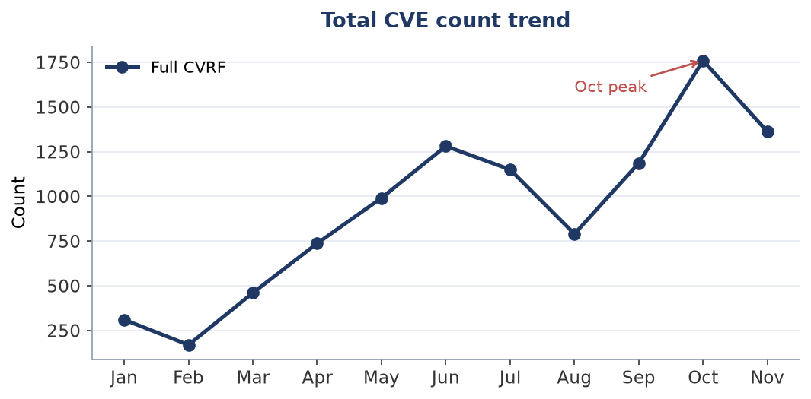
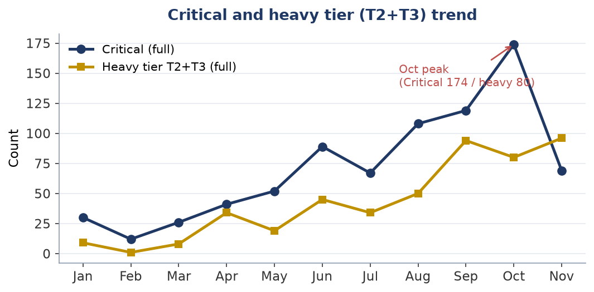
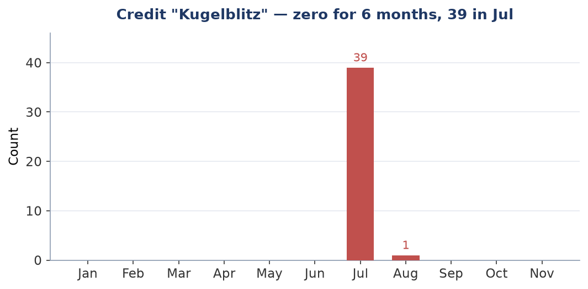
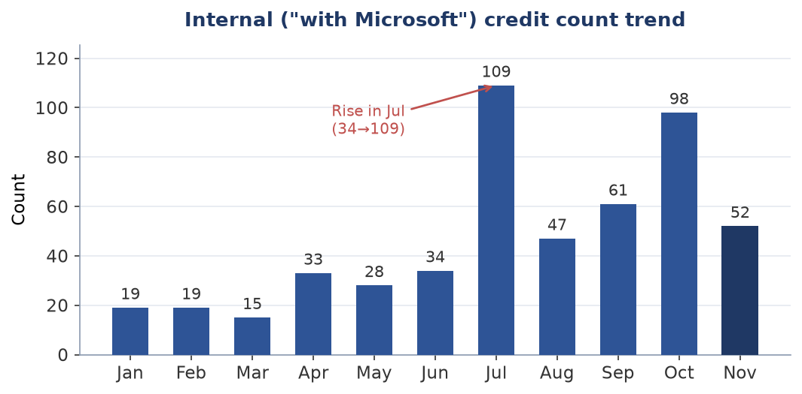

Technical report (machine-generated facts + human interpretation)
The surge in vulnerability discovery by frontier AI
A situational analysis as of November 2026, with implications for practitioners
Practitioners and decision-makers responsible for vulnerability and patch management
About this report's structure and dates This report is composed by injecting human interpretation into a factual record (figures, tables, charts) generated by an automated monitoring script. Fact data acquired: 2026-11-12 (frozen as a snapshot) Interpretation (analysis) updated: 2026-11-12 Note: facts are automatic, interpretation is updated separately by a human. If the two dates are far apart, the interpretation may not reflect the latest facts. |
On MSRC's after-the-fact revisions This report is based on values finalized on 2026-11-12. MSRC revises past months after the fact (e.g., June CVE 1281→1205), so post-revision data may appear to give different results. Revision records are retained separately. Figures are as of the freeze (2026-11-12). MSRC sometimes publishes CVEs for cloud services (Azure, Microsoft 365 online services, etc.) together a little over a week after Patch Tuesday, so the counts can rise after that. Any increase is covered in the next issue's revision note. |
[Disclaimer / Sources] • This report is an informal analysis by a hypothetical author projecting a practitioner responsible for vulnerability response; it is not the view of any specific individual or organization. • Fact data sources: Microsoft MSRC CVRF, CISA KEV, and other public information. • The analysis is generated with AI (a large language model). Facts are verified where possible, but accuracy and completeness are not guaranteed. Confirm important judgments against primary sources. • Facts are auto-updated but interpretation is updated as needed; the two dates may be far apart (see header). • Freshness: the facts in this report are as of 2026-11-12. KEV and PoC status change moment to moment; consult primary sources for the latest. |
[Note on neutrality] This report's analysis is generated using Anthropic's AI (Claude). The report refers to that company's Project Glasswing and the like, but this is intended as neutral description based on public information and does not endorse or advocate for any specific company. Readers should consult primary sources and judge independently. |
Executive summary
November 2026's Patch Tuesday was smaller than October's. The full CVRF fell from 1,760 CVEs to 1,362, and core Microsoft from 1,419 to 1,092. Microsoft assigned all 1,092 core CVEs, and 1,091 of them were first published in the 10 November release.
Not everything fell with the count. The heavy tier — updates that need change control — rose from 79 to 95 in core, its highest since August. Core Critical fell from 77 to 64. For the second month running, the count and the heavy tier moved in opposite directions.
There is one zero-day this month (Microsoft's definition: exploited or publicly disclosed), and Microsoft flags it as exploited (confirmed exploitation). It is rated Moderate, not Critical. CISA added the same CVE to the KEV catalog on release day (KEV retrieved 12 November).
Conclusion in one line The count fell; the heavy tier rose. Once again, the CVE count did not track how heavy the month's patching is. |
Terms: "full CVRF" and "core Microsoft" Full CVRF — every CVE in MSRC's monthly document, including Edge/Chromium, Azure Linux package advisories and Azure cloud advisories. Press tallies differ because they cut this population differently. Core Microsoft — the full CVRF minus CVEs whose affected products are all Azure Linux packages or all Edge/Chromium. Azure cloud advisories stay in core (this month's twenty azure_cloud CVEs). A CVE whose affected products include any Microsoft product also stays in core. The split works from product identifiers (ProductIDs resolved to product names), not from CVE titles. This month: 1,092 core and 270 excluded — the excluded side is 166 Edge/Chromium and 104 Azure Linux. Edge/Chromium advisories, absent last month, are back. |
Analysis: the count fell, and the heavy tier rose
The total is down 22.6% on last month. This section looks at what core contains and at the measures that did not move with the count.
|
October 2026 |
November 2026 |
All CVEs |
1,760 |
1,362 |
Core Microsoft |
1,419 |
1,092 |
Credited |
1,334 |
1,077 |
Critical (all / core) |
174 / 77 |
69 / 64 |
Heavy tier (T2+T3, core) |
79 |
95 |
Zero-days |
3 (1 exploited, 2 publicly disclosed) |
1 (exploited) |
Microsoft is the CNA (the organisation that assigned the CVE) for all 1,092 core CVEs. Of these, 1,091 were first published in the 10 November release; the only earlier one, on 5 November, is an elevation of privilege in Entra Device Registration.
The excluded side fell from 341 to 270, and its make-up changed. Last month it was entirely Azure Linux; this month it is 166 Edge/Chromium (Chrome is the CNA for 165) and 104 Azure Linux.
Confirmed exploited, but not Critical — five months running
This month's single confirmed-exploited CVE is CVE-2026-124194, a spoofing vulnerability in Microsoft Outlook, rated Moderate. None of the month's 69 Critical CVEs is confirmed exploited.
From July through November, every month had confirmed exploitation, and none of it was in a Critical CVE — five months running. May, by contrast, had one confirmed-exploited Critical. This does not mean Critical vulnerabilities do not get exploited. It means that a triage process that looks only at Critical would have missed every confirmed-exploited CVE in those five months. This month's is not even Important; it is Moderate.
CISA also added the CVE to the KEV catalog on 10 November 2026 (KEV retrieved 12 November). It is both flagged as exploited by Microsoft and listed in KEV. There is no publicly-disclosed-only zero-day this month.
Count and weight: what did not move together
The count fell, but the measures of how heavy the response is did not move with it.
The heavy tier (T2+T3, core) rose from 79 to 95. Its share of core went from 5.6% to 8.7%. At 95, it is the highest since August (93 in September).
By product category, SQL/Dynamics accounts for 54 of the heavy tier, double last month's 27. Office went from 35 to 26 and Exchange from 7 to 9 (last month's figures come from recounting the October freeze-time copy with this month's classifier, v3).
Core Critical fell from 77 to 64: 48 remote code execution and 16 elevation of privilege, 64 in all.
Critical across the full CVRF fell from 174 to 69. Most of the fall is on the excluded side, which last month held 97 Azure Linux Critical CVEs; this month the excluded side has five Critical CVEs (four Chromium, one CivetWeb).
A lower count does not mean a lighter deployment plan. Last month the count was the highest and the heavy tier fell; this month the count fell and the heavy tier rose.
Implications and recommended actions
These are recommendations drawn from this report's analysis, not settled regulatory requirements. Specific supervisory expectations should be confirmed against primary sources.
1. What to monitor (continued)
Do not use the CVE count as a threat indicator. This month it fell 22.6% on last month, yet the heavy tier rose; last month it was the other way round. For two months running, the count has not moved in step with defensive load.
Track the tier that needs change control instead. This month it rose from 79 to 95 in core, 54 of them SQL/Dynamics. Even a month with a smaller total can carry a heavier deployment plan than the month before.
But a count is not a measure of effort. Effort depends on how many products the updates span, and this report does not measure that (the same limitation as last month).
2. Decouple triage from the severity label (continued)
None of this month's 69 Critical CVEs is confirmed exploited; the one confirmed-exploited CVE is Moderate. From July to November, no confirmed-exploited CVE in any month was Critical.
May, on the other hand, did have a confirmed-exploited Critical. What the five-month record shows is that the severity label itself is an unreliable basis for prioritisation.
The alternative is unchanged: combine CISA KEV, EPSS and asset reachability.
Check the population before reading a Critical count. Of this month's 69 Critical CVEs across the full CVRF, five are on the excluded side.
3. Emergency patch SLA
This month's confirmed-exploited CVE, CVE-2026-124194, was added to CISA KEV on 10 November (KEV retrieved 12 November). Start deploying it the same day. KEV sets a due date of 24 November (the deadline for US federal agencies).
According to the vendor's CVSS vector, the attack is network-based, needs no prior privileges and has low complexity — but it requires user interaction. The impact is spoofing, with confidentiality impact rated High. The CVSS base score is 6.5; six products are affected (Microsoft 365 Apps and Office LTSC 2021 and 2024).
The temporal Exploit Code Maturity metric is High (E:H), consistent with the CVRF's exploitation entry ("Exploitation Detected").
A Moderate rating and a 6.5 base score are the kind of values that a severity or base-score cut-off pushes down the queue. Both Microsoft's exploitation flag and the KEV listing catch this one.
4. Check your own filter (continued)
Following record 4 in the last issue (a zero-day that was only publicly disclosed fell outside the matched set), this issue adds "publicly disclosed" to the conditions for the KEV/EPSS matched set (matching rule v3). With no publicly-disclosed-only zero-day this month, the change brought no new CVE into the set.
This month's matched set is 916 CVEs (1,164 last month). The confirmed-exploited CVE is in it and was picked up as a new KEV addition.
Some CVEs in KEV still fall outside the set. CVE-2026-123158 (OpenSSH; an Azure Linux advisory on the excluded side) is in this month's CVRF and was added to CISA KEV on 9 November, but the CVRF has no exploitation entry for it. Rated Important and uncredited, it meets none of the matching conditions (confirmed exploited, publicly disclosed, heavy tier, Critical, externally credited), so it does not appear in the KEV table.
When you match external threat intelligence against your own estate, check each month's numbers for what falls outside the set you are matching.
5. Edge/Chromium auto-update (continued)
This month's CVRF carries 166 Edge/Chromium advisories (none last month, 24 the month before), four of them Critical. This report cannot say why the count swings.
The point stands regardless of the count. Applications that embed Electron/CEF (Teams, Slack, VS Code and others) do not benefit from the browser's auto-update. Using an SBOM to find those dependencies remains necessary.
6. Business continuity for AI dependence (continued)
Where AI is built into a workflow, treat dependence on a top-tier model as a business-continuity concern, and make model redundancy and fallback the default.
Primary-data breakdown — November 2026 Patch Tuesday
What follows tallies primary data from MSRC CVRF v3.0 (frozen snapshot, 2026-11-12). Each population is shown twice: the full CVRF, and core Microsoft, which excludes CVEs whose affected products are all Edge/Chromium or all Azure Linux. Azure cloud is not excluded — this month's twenty azure_cloud CVEs sit in core. Figures and tables are generated from the state; the notes below give the key facts for each table.
Table 1. By severity (two populations shown)
Severity |
Full CVRF |
(%) |
Core MS products |
(%) |
Critical |
69 |
5% |
64 |
6% |
Important |
1132 |
83% |
1027 |
94% |
Moderate |
113 |
8% |
1 |
0% |
Low |
48 |
4% |
0 |
0% |
Unrated |
0 |
0% |
0 |
0% |
Total |
1362 |
100% |
1092 |
100% |
Table 1 (by severity) — key point
Critical fell from 174 to 69, and its share of the full CVRF from 9.9% to 5.1%. Of the 69, five are on the excluded side (four Chromium, one CivetWeb); core Critical is 64. Core Critical fell from 77, though its share of core edged up from 5.4% to 5.9%. The 64 are 48 remote code execution and 16 elevation of privilege, and none of them is confirmed exploited.
Table 2. By reboot class (the operational-workload axis)
Class |
Description |
Full CVRF |
Core MS products |
T3 |
Staged rollout required (Boot/Crypto) |
5 |
4 |
T2 |
Requires change management / maintenance window |
91 |
91 |
T0/T1 |
Auto-update / steady pipeline |
1266 |
997 |
Table 2 (by reboot class) — key point
T2 and T3 together — the heavy tier — come to 95 in core (91 T2, 4 T3), up from 79 last month. Against 42 in August, 93 in September and 79 in October, that is the highest since August. Core shrank from 1,419 to 1,092, so the share rose from 5.6% to 8.7%. In a month when the count fell, the heavy tier rose. By category, SQL/Dynamics is the largest, at 54. This report does not measure how many products those 95 span.
Table 3. Finder major categories (full CVRF)
Category |
Count |
(%) |
Note |
Uncredited |
285 |
21% |
May include automation (not asserted) |
External researchers (named) |
859 |
63% |
Named external finders |
Anonymous |
114 |
8% |
Self-identified anonymous |
Internal (with Microsoft etc.) |
52 |
4% |
Includes Kugelblitz/MORSE/WARP/ACS |
Hash identifier |
52 |
4% |
MS-anonymized identifier (identity unknown) |
Table 3 (by discoverer bucket) — key point
External credits went from 1,000 to 859, uncredited CVEs from 426 to 285, and anonymous credits from 167 to 114. The uncredited share of the full CVRF went from 24.2% to 20.9%. Every bucket fell along with the total, so no change in who is finding vulnerabilities can be read from this table. The fall is recorded as a fact and nothing more.
Table 4. Finder breakdown of Critical vulnerabilities (aggregated, no names)
Discoverer |
Critical count |
Tendency |
External researchers (named) |
44 |
Majority of Critical |
Anonymous |
10 |
— |
Uncredited |
7 |
Possibly automation (not asserted) |
Internal (ACS/WARP/MORSE) |
6 |
Few (mainly Networking/Hyper-V) |
Hash identifier |
2 |
— |
Kugelblitz (Edge, ref.) |
0 |
Does not appear in Critical (surface only) |
Counts only (no personal names stored in the fact data). The top rows are per-bucket and sum to the Critical total. The Kugelblitz row is a cross-cutting reference (not additive). Individual researcher names and CVE examples are given as prose in the interpretation.
Table 4 (discoverers of Critical) — key point
Critical CVEs without a credit went from 98 last month to 7, and their share of Critical from 56.3% to 10.1%. Last month, 97 of the 98 were on the excluded side (Azure Linux). This month's seven are five on the excluded side and two in core. This table counts the full CVRF, so changes in excluded-side Critical show up directly in the uncredited row. As in earlier issues, the absence of a credit is not used to infer who found a vulnerability.
Table 5. By product category (full CVRF)
Category |
Count |
(%) |
Win Services/Components |
358 |
26% |
Office/Word/Excel/PPT |
200 |
15% |
Edge/Chromium |
166 |
12% |
Kernel/Driver |
161 |
12% |
Azure Linux (re-listing) |
104 |
8% |
Networking |
86 |
6% |
SQL/Dynamics |
54 |
4% |
.NET/Dev |
52 |
4% |
Graphics/Media |
33 |
2% |
Microsoft (other) |
33 |
2% |
Auth/Identity |
27 |
2% |
RDP/Remote |
23 |
2% |
Azure/Cloud |
20 |
1% |
Hyper-V/Virtual |
18 |
1% |
Other |
14 |
1% |
Exchange |
9 |
1% |
Boot/Crypto (T3) |
3 |
0% |
SharePoint |
1 |
0% |
Note: from this issue the product categories use classifier v3, which assigns Microsoft components that v2 left in 'Other' (e.g. HEVC, AD CS, WebDAV) to their categories. Counts compared with earlier issues (v2: Sep–Oct 2026) include moves caused only by the reclassification (October 2026 recounted under v3: Other 62 → 11).
Table 5 (by product category) — key point
From this issue, the table uses classifier v3, and this month is v3's first data point. As the note under the table says, Microsoft components that v2 left in "Other" are now assigned to their categories. Set beside last issue's Table 5 (v2), part of any change would come from the reclassification alone. Against the October freeze-time copy recounted under v3, Edge/Chromium (0 → 166), Office (172 → 200) and SQL/Dynamics (27 → 54) rose, while Azure Linux (341 → 104), Windows services (485 → 358), kernel and drivers (276 → 161) and networking (148 → 86) fell. "Other" went from 11 to 14.
Do not compare it directly with Table 5 from August or earlier, or from September and October (v2). The classifier version differs.
Appendix: an inventory of credits suggesting "AI"
The credit name "Kugelblitz" appears 39 times in July, once in August, and zero times in September, October and November. It has never appeared on a Critical CVE.
The trend cannot be interpreted. All that can be said is that the name has not appeared for three months running.
The credit string "AIフィジカルインターフェイス二号機", recorded in the August issue, appears 36 times this month. The frozen counts are 2 in June, 10 in July, 13 in August, 38 in September, 3 in October and 36 in November. All 36 this month are core and rated Important; none is Critical and none is confirmed exploited. This report does not say what it is. As in the August issue, all that can be said is that this is what the credit string says.
One of the credits on this month's zero-day, CVE-2026-124194, is the string "(researcher name) using Claude with Anthropic". The use of AI (Claude) is stated in the credit string itself. The same string appears once in October as well. This report draws no inference from it about how the vulnerability was found or how much AI contributed; it records only what the string says.
The rule is unchanged: nothing is inferred about who or what is behind such a credit name. All that was counted is matches on a credit string.
Comparison with historical data — the January–November 2026 trend
Month-to-month comparison holds across four months, August to November. In all four, the population split is computed with the product-identifier classifier (v2), and each month was frozen at the same point after Patch Tuesday (two days after). July and earlier use a different classifier. That is why the "core Microsoft" column has been dropped from the trend table; every axis plotted below is independent of the classifier. Separately, Table 5's product categories move to a new version (v3) from this issue.
Trend table (only real numbers robust to acquisition lag)
Month |
CVE full |
Critical |
Heavy(T2+T3) |
Kugelblitz |
Internal(MS) |
Jan |
310 |
30 |
9 |
0 |
19 |
Feb |
169 |
12 |
1 |
0 |
19 |
Mar |
460 |
26 |
8 |
0 |
15 |
Apr |
737 |
41 |
34 |
0 |
33 |
May |
991 |
52 |
19 |
0 |
28 |
Jun |
1281 |
89 |
45 |
0 |
34 |
Jul |
1150 |
67 |
34 |
39 |
109 |
Aug |
790 |
108 |
50 |
1 |
47 |
Sep |
1186 |
119 |
94 |
0 |
61 |
Oct |
1760 |
174 |
80 |
0 |
98 |
Nov |
1362 |
69 |
96 |
0 |
52 |
Note: the 'CVE core' (core Microsoft products) column is not shown. The population classifier changed to v2 (affected-product based) from 2026-Aug, and placing v2 values in the same column as months frozen under v1 (title based) would render a change of classifier as a trend — an apparent collapse in core products. The current month's core breakdown is in the tables above, where only one classifier version is involved.

Fig 1: Total CVE count trend (full CVRF)
Chart 1 (total CVE count) — reading
This month's 1,362 is below October's 1,760 and the second highest in the observation window. The curve tracks neither defensive load nor risk: this month the count fell, while the heavy tier on the core side rose.

Fig 2: Critical count and heavy tier (T2+T3) trend
Chart 2 (Critical and the heavy tier) — reading
The two lines moved in opposite directions again — the reverse of last month. Critical (full CVRF) fell from 174 to 69, and the heavy tier (full CVRF) rose from 80 to 96. Most of the fall in Critical comes from last month's 97 excluded-side CVEs not recurring. This chart plots the full CVRF, so changes in excluded-side Critical show up directly in the line.

Fig 3: Monthly appearance of the credit "Kugelblitz"
Chart 3 (Kugelblitz) — reading
After the July spike, one in August and zero from September to November. The shape of the curve says nothing about anyone's activity.

Fig 4: Internal ("with Microsoft") credit count trend
Chart 4 (internal discovery) — reading
Microsoft internal-discovery credits fell from 98 to 52, and their share of all credited CVEs from 7.3% to 4.8%. Count and share moved together. This chart plots the count.
What the trend shows (summary) The total and Critical (full CVRF) fell from last month. The heavy tier rose, to its highest since August. Last month's high Critical count came from the excluded side (Azure Linux), which did not recur. Core Critical fell too. "Core Microsoft" can be compared from August to November. Table 5 uses v3 from this issue, a different version from earlier issues' Table 5. Internal discovery fell in both count and share. The chart plots the count. |
KEV / EPSS — prioritizing immediate response
The following cross-references the target CVEs (T2/T3 ∨ Critical ∨ external-researcher credit ∨ confirmed exploitation ∨ publicly disclosed) against CISA KEV and FIRST EPSS. KEV = a discrete fact of exploitation confirmed by CISA (the notification trigger; a separate source from Microsoft's own exploitation flag, which this report calls “confirmed exploitation”). EPSS = an estimate of exploitation probability (a point-in-time value, changes daily, for reference). No discoverer or causation is asserted from these numbers.
Immediate-response targets — listed in CISA KEV (as of 2026-11-12)
CVE |
Product |
Severity |
Reboot class |
MS exploited flag |
CVE-2026-124194 |
Microsoft Outlook |
Moderate |
T0/T1 |
Yes |
Note: “MS exploited flag” is the Exploited value in the CVRF (2026-11-12 frozen snapshot); Yes is what this report calls “confirmed exploitation”. It is a separate source from KEV listing (CISA's determination), and the two can disagree (a CVE can be in KEV while the flag is No). Where the text says “exploited”, it states which of the two it rests on.
Top EPSS — estimated exploitation probability (as of 2026-11-10)
CVE |
Product category |
EPSS |
Percentile |
CVE-2026-109469 |
Azure/Cloud |
0.0067 |
52.2% |
CVE-2026-124040 |
Azure Linux (re-listing) |
0.0051 |
44.2% |
CVE-2026-121035 |
Edge/Chromium |
0.0044 |
38.8% |
CVE-2026-121126 |
Edge/Chromium |
0.0041 |
35.9% |
CVE-2026-121203 |
Edge/Chromium |
0.0037 |
31.2% |
CVE-2026-76024 |
Edge/Chromium |
0.0026 |
18.2% |
CVE-2026-99221 |
Azure Linux (re-listing) |
0.0018 |
7.3% |
Note: EPSS is updated daily and its values change. The table above is a point-in-time snapshot (as of 2026-11-10) and is not used as a standalone trend metric. Only KEV is used as a notification trigger (EPSS is not).
Note: product names (KEV table) and product categories (EPSS table) are sourced from the CVRF (2026-11-12 frozen snapshot) — a separate source and point in time from KEV listing status and EPSS values. Categories use the same classification as Table 5. No discoverer or causation is asserted from these product names/categories.
Appendix: method, sources, accountability record
This appendix records the process behind the conclusions, for reproducibility and accountability.
1. Purpose and questions
The question carries over from last issue: what monthly vulnerability data can tell us about defensive load and actual risk. This issue also checked how the measures of weight moved when the count fell after last issue's high.
2. Sources
This issue rests on primary data only and cites no press or secondary analysis.
MSRC CVRF API v3.0 — monthly security updates as per-CVE structured data, including acknowledgements, severity, exploitation status, affected products, CVSS vectors and FAQs.
CISA KEV catalog — the catalog of known exploited vulnerabilities, cross-checked against this month's CVEs.
FIRST EPSS — the estimated probability that exploitation activity will be observed within 30 days.
3. How the data was acquired
Primary data was fetched in the acquisition environment and frozen two days after Patch Tuesday (07:18 on 12 November), the same interval as in August to October. From this issue, copies of the CVRF and the KEV catalog as of the freeze are kept with the frozen figures (a recount of the copy was confirmed to reproduce the frozen figures). Compared with the previous day's fetch (11 November, CVRF version 2026-11-10T08:00), core (1,092), core Critical (64), the heavy tier (95) and the single zero-day were unchanged. The total rose by twenty from 1,342; all twenty are on the excluded side (Azure Linux), and eighteen were first published on 11 November. Critical across the full CVRF rose by one from 68 (CivetWeb, CVE-2026-124040, excluded side). Credited rose by one (1,076 → 1,077). KEV was retrieved on the day of the freeze (12 November; catalog version 2026.11.10). EPSS scores are dated 2026-11-10, the latest FIRST had published at retrieval. Most of the release's CVEs have no EPSS score yet (seven of the 916 in the matched set have one).
4. Method, in sequence
Primary data fetched two days after Patch Tuesday.
Compared with the previous day's fetch: core, core Critical, the heavy tier and the zero-day had not moved. The total rose by twenty on the excluded side, and full-CVRF Critical and credited each moved by one (section 3).
Frozen, with copies of the CVRF and the KEV catalog as of the freeze.
KEV and EPSS retrieved for this month's matched set.
For the zero-day, the exploitation entry, CVSS vector and affected products were read in the original CVRF.
With the heavy tier up, its breakdown by product category was checked. For the comparison with last month, the October freeze-time copy was recounted under this month's classifier (v3) (section 5, record 1).
5. Record of the work
For accountability, the judgements made and their grounds are recorded.
Record 1: Table 5's classifier moves to v3. Under v2, Microsoft component names resolved from product identifiers (HEVC, AD CS, WebDAV and others) matched no rule and stayed in "Other". v3 assigns them to their categories. Recounting the October freeze-time copy (the same CVRF version as the frozen figures) under v3 takes "Other" from 62 to 11. On the recount, the copy's total, Critical and core Critical still match the frozen figures (1,760, 174, 77). The population split (core / excluded) stays at v2 and is unaffected by v3. This issue's core, Critical and heavy-tier counts use the same rules as earlier issues.
Record 2: the matching rule moves to v3. Following last issue's record 4, "publicly disclosed" was added as a condition for the KEV/EPSS matched set. This month has no zero-day that is only publicly disclosed, and the change added no CVE to the set.
Continuation 3: exploitation status within one document. The issue before last recorded that, among confirmed-exploited CVEs, the CVSS temporal metric agreed with Threats for some and not for others. This month's confirmed-exploited CVE (CVE-2026-124194) has Exploit Code Maturity High (E:H), consistent with Threats' "Exploitation Detected". That makes a second month of agreement, but two agreeing cases are not enough to rely on the field. This report still derives its exploited flag from Threats.
Continuation 4: do not tie a credit to an entity on circumstantial evidence. The July issue asserted that "Kugelblitz" was a particular in-house AI tool, and withdrew the claim after checking primary sources. That discipline holds. Nothing is claimed about activity stopping or continuing now that the name has been at zero for three months.
6. What the conclusions finally rest on, and their limits
Grounds relied on (confidence: high)
The frozen figures are a mechanical tally of primary data. Against the day before, core, core Critical, the heavy tier and the zero-day are confirmed unchanged (the total rose by twenty on the excluded side).
Copies of the CVRF and the KEV catalog as of the freeze are kept, and recounting the copy reproduces the frozen figures.
The population split is again based on product identifiers, with every product identifier resolved (zero unresolved). The 270 excluded are 166 Edge/Chromium and 104 Azure Linux.
The preconditions for the confirmed-exploited CVE (network, no prior privileges, user interaction required, low complexity) come from the CVRF's CVSS vector. The KEV listing date and due date come from the KEV catalog retrieved on the day of the freeze.
Limits (confidence: unsettled / caution)
Why the heavy tier rose is not known. It is concentrated in SQL/Dynamics, but the CVRF does not say why.
The heavy tier is counted, but how many products it spans is not measured. A higher count cannot be read as more work.
The category comparison with last month uses the October copy recounted under v3. It differs from last issue's Table 5 (v2).
Why the Edge/Chromium count swings so much from month to month is not known.
Actual attacks and observed techniques for the confirmed-exploited CVE were not checked. The preconditions are an assessment from the CVRF's CVSS vector, not something observed in the field.
EPSS is as of 2026-11-10. It changes daily, and most of the release's CVEs have no score yet.
7. How to reproduce
This issue's figures can be reproduced with the collection and freeze tools in the public msrc_monitor repository (Python 3.12, network access to the MSRC API). MSRC revises past months after the fact, so identical values are not guaranteed; post-freeze revisions are recorded separately.
Fetch this month's primary data: python collect.py 2026-Nov
Check and freeze (a human runs the freeze; a month already frozen is refused): python freeze_month.py 2026-Nov --dry-run, then python freeze_month.py 2026-Nov
KEV/EPSS matching: python enrich.py 2026-Nov
Credit tallies (per CVE, de-duplicated): see credit_counts / finder_bucket in state/2026-Nov.json
The interpretation text lives per month under interpretation/<year-month>/, and a build cannot mix in another month's.
Confidence tiers (how this report grades its claims) [High] The total fell from 1,760 to 1,362, and core from 1,419 to 1,092 / the heavy tier (core) rose from 79 to 95, 54 of them SQL/Dynamics / core Critical fell from 77 to 64 / one confirmed-exploited CVE, rated Moderate; none of the 69 Critical CVEs is confirmed exploited / that CVE is also in KEV (added 10 November) / the population split is based on product identifiers and fully resolved [Medium] The observation that, for five months running, months with confirmed exploitation included no Critical CVE (one or two such CVEs a month, and May did have a confirmed-exploited Critical) [Unsettled] Why the heavy tier rose / how many products the heavy tier spans / why the Edge/Chromium count swings / why Kugelblitz is at zero [Caution] Table 5 uses v3 from this issue, a different version from earlier issues' Table 5 / the matching rule is v3 from this issue (publicly disclosed added) / a CVE in KEV sits outside the matched set (OpenSSH, excluded side) |
This report was produced through dialogue with an AI assistant (Claude). Primary data was acquired and executed in the acquisition environment, and the figures are based on those runs. The interpretation and analysis include AI contribution; independent verification against primary sources is recommended before relying on it for important decisions.